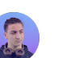

LGS
7. ve 8. sınıf hazırlık
Yeni nesil soru çözümü, haftalık ödev takibi, deneme analizi ve okul derslerine destek.

18 yıldır güven veren eğitim kurumu · Sefaköy
LGS, TYT, AYT ve okul destek programlarında seviye analizi, birebir etüt, deneme takibi ve veli bilgilendirmesi tek sistemde.
Kurs ve hazırlık programları
İlk görüşmede seviye ölçümü yapılır, ardından ders, etüt, deneme ve rehberlik temposu öğrencinin hedef okuluna göre planlanır.
Yeni nesil soru çözümü, haftalık ödev takibi, deneme analizi ve okul derslerine destek.

TYT temel güçlendirme, AYT branş takibi, koçluk görüşmeleri ve hedef sıralama programı.

Gerçek sınav atmosferi, optik değerlendirme, sıralama raporu ve konu eksiği listesi.

Matematik başta olmak üzere eksik konuya özel birebir ders, küçük grup ve hızlı telafi.
Başarı sistemi
Danışman öğretmenler her öğrencinin net gelişimini, konu eksiklerini ve çalışma alışkanlığını düzenli izler. Veli görüşmeleriyle süreç aile tarafında da şeffaf kalır.
Son aksiyon: Geometri eksikleri için birebir etüt planlandı.
Veli notu: Haftalık gelişim özeti WhatsApp üzerinden paylaşılacak.
Öğrenci ve veliyle hedef, sınıf seviyesi, okul durumu ve sınav beklentisi netleşir.
Deneme ya da branş taramasıyla öğrencinin güçlü ve gelişmesi gereken alanları çıkarılır.
Ders programı, etüt, ödev takibi ve deneme takvimi öğrencinin hedeflerine göre hazırlanır.
Devamsızlık, deneme sonucu, ödev disiplini ve rehberlik notları düzenli paylaşılır.
Tıp, diş hekimliği, mühendislik, hukuk, psikoloji ve öğretmenlik başta olmak üzere farklı hedeflere yerleşen öğrencilerimizden bazıları.
Duyurular ve dönem akışı
Kontenjan, sınıf seviyesi ve hedef okul görüşmesi için ön kayıt formu açıldı.
Formdan “bursluluk sınavı” seçen velilere sınav günü ve saat bilgisi gönderilir.
TYT, AYT ve LGS denemeleri için kontenjan ve sonuç analiz ekranı hazırlanır.
Ön kayıt
Formu doldurunca talep numarası oluşur. İstersen bilgileri tek tıkla WhatsApp mesajına çevirip kuruma gönderebilirsin.
Sık sorulanlar
İletişim
İlk öncelikle hayallerinizi gerçekleştirmek için güzel bir lise daha sonra üniversite kazanmak gerekiyor. Bunun için hayallerinize ulaşabilmek için doğru adres; 2020-2021 öğrencisiyim kurum adına söylenen bazı kötülemelere kulak asmayın gayet eğitimi olsun idari ve hocaları olsun tamamen bütünlük içerisinde bir kurum. Dersler tam zamanında hatta 1 ay öncesinden bitirip sürekli deneme çözerek işleyen bir sistem var. Ben kendi adıma söylemek gerekirse çok memnunum ve benden sonraki gelecek öğrencilere tek tavsiyem bu kuruma atılan kötü yorumları ciddiye almayın gözünüz kapalı kayıt olabilirsiniz herkese başarılar..
iki senedir bu dershaneye geliyorum gerçekten çok güzel bi dershane buraya kayıt olmadan önce başka dershanelere görüşmeye gittim hiç böyle karşılanmadım herkes çok güler yüzlü bütün öğretmenler işlerini çok iyi yapıyolar hele bitane ...

2 Yıldır kurumda öğrenciyim. Bütün öğretmen kadrosu deneyimli. Bu konuda bu kurumu tavsiye etmemde en buyuk etmen zaten. Herhangi bir sorunda gerek Nesim hocam olsun gerek Umut hocam olsun derhal ilgileniyorlar. Ayrica bunların yanı sıra disipline son derece onem veren bir kurum. Öğretmen öğrenci ilişkisi cok iyi. Kısacası tavsiye edilecek bir kurum. Eger ciddi bir üniversite lise hayaliniz varsa ilk gorusmeniz gerek kurum :)